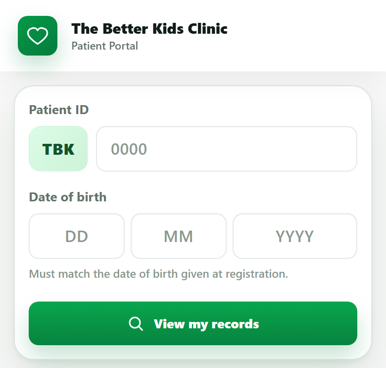

Digital Patient Intake Forms for Pediatric Clinics
Digital patient intake replaces the paper form a parent fills at a first visit — child details, medical history, allergies, consent — with a form completed on a phone or tablet, before arrival or on-site, that feeds straight into the clinic's record instead of being retyped by staff afterward.
A new-patient visit at most pediatric clinics still starts the same way: a clipboard, a pen, and ten minutes of a parent writing down information that then has to be typed into the system by someone at the front desk — twice the effort for the same data, and a delay before the doctor even sees the child.
Where paper intake actually costs time
The paper form itself isn't the slow part — parents can fill one out reasonably quickly. The cost shows up afterward: someone at the front desk has to read the handwriting, interpret it, and manually enter it into whatever system the clinic uses, or the doctor works straight off a paper sheet that never makes it into a searchable record at all. For a new pediatric patient with birth history, allergies, and family history to capture, this is a meaningful chunk of first-visit time spent on data entry rather than care.

What a digital intake form changes
- It can be sent before arrival. A link shared when the appointment is booked lets a parent fill it out at home, so the child's record already exists before they walk in.
- It goes straight into the record — no re-typing. What the parent enters becomes the child's profile directly, instead of a paper form that has to be interpreted and re-keyed.
- Repeat visits don't start from zero. A returning patient's existing details pre-fill, and the parent only updates what's changed instead of re-writing everything.
- Legibility stops being a problem. A typed allergy list or medication name doesn't depend on handwriting being read correctly under time pressure.
Where the time actually goes
Illustrative breakdown of a typical new-patient intake, paper vs. digital.
Digital intake works best once records are already digital end-to-end.
Read the clinic digitization guideRolling it out without losing less tech-comfortable parents
Not every parent will want to fill a form on their phone, and that's fine — the goal isn't to force digital intake on everyone, it's to make it the default path so most visits skip the manual re-entry step. A tablet at the front desk, with a staff member available to help, covers the parents who'd rather not use their own phone. What matters is that the data still lands in the same digital record either way, rather than paper for some patients and digital for others creating two inconsistent systems.
Frequently asked questions
What is digital patient intake for a pediatric clinic?
It's replacing the paper form a parent fills out at their first visit — child's details, medical history, allergies, consent — with a form filled on a phone or tablet, either before arrival via a link or on-site, that feeds directly into the clinic's record system instead of being manually typed in later.
Does digital intake work for parents who aren't comfortable with smartphones?
Yes, if the clinic keeps a tablet at the front desk as a fallback and staff assist when needed — digital intake should be the default path, not the only path. Most clinics find only a small share of visits need the assisted option.
What information should a pediatric intake form collect?
Typically: child and parent/guardian details, date of birth, birth history for infants, known allergies, current medications, family medical history, immunization history if coming from another clinic, and consent for treatment and communication.
Does digital intake replace the need for a doctor to ask questions during the visit?
No. It removes redundant, structured data entry — writing down the same allergy or history information at every new-patient visit — so the doctor's time in the room goes to clinical questions and examination, not re-collecting information already on the form.
See digital intake feed straight into the child's record.
Twenty minutes, real workflow, no script.
Book a walkthrough or chat with us on WhatsApp →